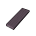
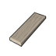
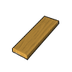

塑料级·原始·枫木板材 MaplePlank
塑料级家具建筑420防具15穿戴件8近战工具16其它1共460件 价值1.7 质量0.34 护甲0.80/0.60/0.04 利钝0.40/0.85
Vile's Wood You Please · def自带 · Things/VileWood/NewPlanksStacked
塑料级·原始·桦木板材 BirchPlank
塑料级家具建筑420防具15穿戴件8近战工具16其它1共460件 价值1.6 质量0.36 护甲1.20/0.80/0.04 利钝0.50/1.30
Vile's Wood You Please · def自带 · Things/VileWood/NewPlanksStacked
塑料级·原始·橡木板材 OakPlank
塑料级家具建筑420防具15穿戴件8近战工具16其它1共460件 价值1.9 质量0.44 护甲1/0.90/0.04 利钝0.60/1.20
Vile's Wood You Please · def自带 · Things/VileWood/NewPlanksStacked
塑料级·原始·竹板 BambooPlank
塑料级家具建筑420防具15穿戴件8近战工具16其它1共460件 价值1.5 质量0.25 护甲0.60/0.80/0.04 利钝0.30/0.80
Core_SK · def自带 · Things/Item/Veg/BambooPlank
塑料级·原始·龙血树板材 DragonwoodPlank
塑料级家具建筑420防具15穿戴件8近战工具16其它1共460件 价值1.9 质量0.56 护甲0.80/1/0.04 利钝0.40/0.85
Vile's Wood You Please · def自带 · Things/VileWood/NewPlanksStacked
塑料级·原始·柚木板材 TeakPlank
塑料级家具建筑420防具15穿戴件8近战工具15其它1共459件 价值2.5 质量0.36 护甲1.10/0.70/0.04 利钝0.40/0.85
Vile's Wood You Please · def自带 · Things/VileWood/NewPlanksStacked

塑料级·原始·红树板材 MangrovePlank
塑料级家具建筑420防具15穿戴件8近战工具15其它1共459件 价值1.9 质量0.54 护甲1/0.80/0.04 利钝0.40/1.40
Vile's Wood You Please · def自带 · Things/VileWood/NewPlanksStacked
塑料级·原始·金合欢板材 AcaciaPlank
塑料级家具建筑420防具15穿戴件8近战工具15其它1共459件 价值2 质量0.48 护甲1.30/0.80/0.04 利钝0.70/1.40
Vile's Wood You Please · def自带 · Things/VileWood/NewPlanksStacked

塑料级·原始·号角树板材 CecropiaPlank
塑料级家具建筑420防具14穿戴件8近战工具15其它1共458件 价值1.3 质量0.18 护甲0.50/0.90/0.05 利钝0.30/0.80
Vile's Wood You Please · def自带 · Things/VileWood/NewPlanksStacked
塑料级·原始·杨木板材 PoplarPlank
塑料级家具建筑420防具14穿戴件8近战工具15其它1共458件 价值1.3 质量0.29 护甲0.60/1/0.05 利钝0.30/0.80
Vile's Wood You Please · def自带 · Things/VileWood/NewPlanksStacked

塑料级·原始·松木板材 PinePlank
塑料级家具建筑420防具14穿戴件8近战工具15其它1共458件 价值1.3 质量0.23 护甲0.60/1.20/0.05 利钝0.30/0.80
Vile's Wood You Please · def自带 · Things/VileWood/NewPlanksStacked